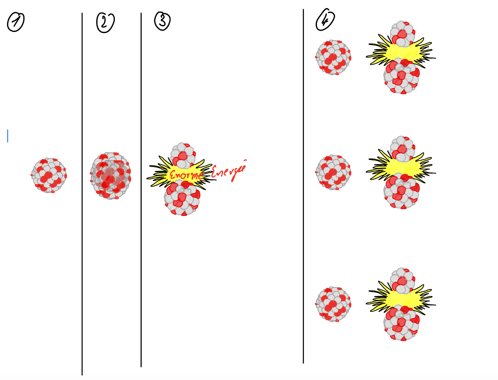
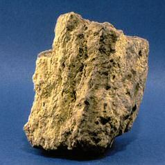
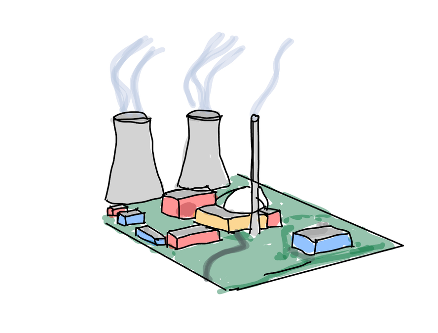
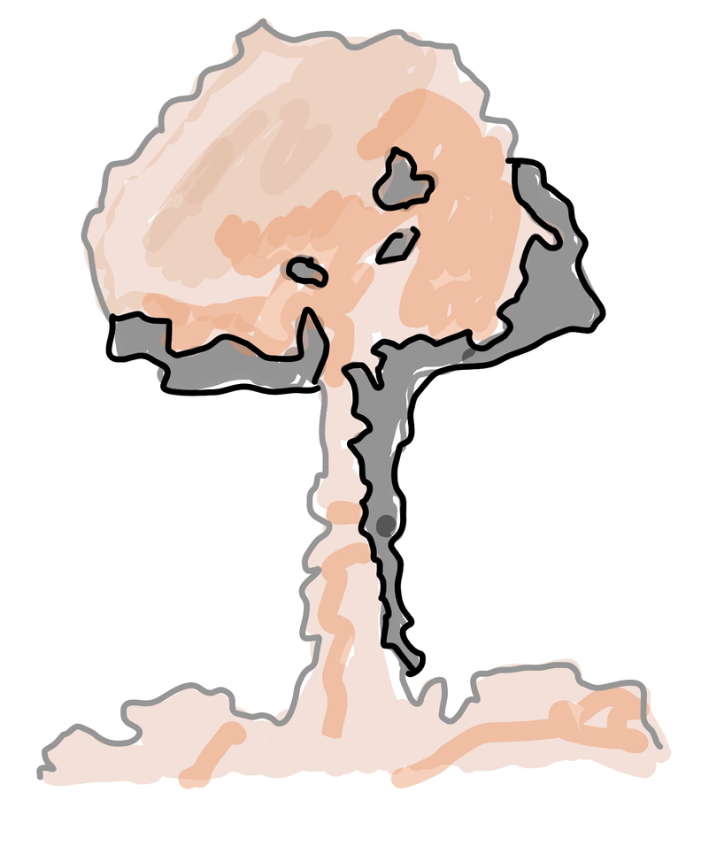
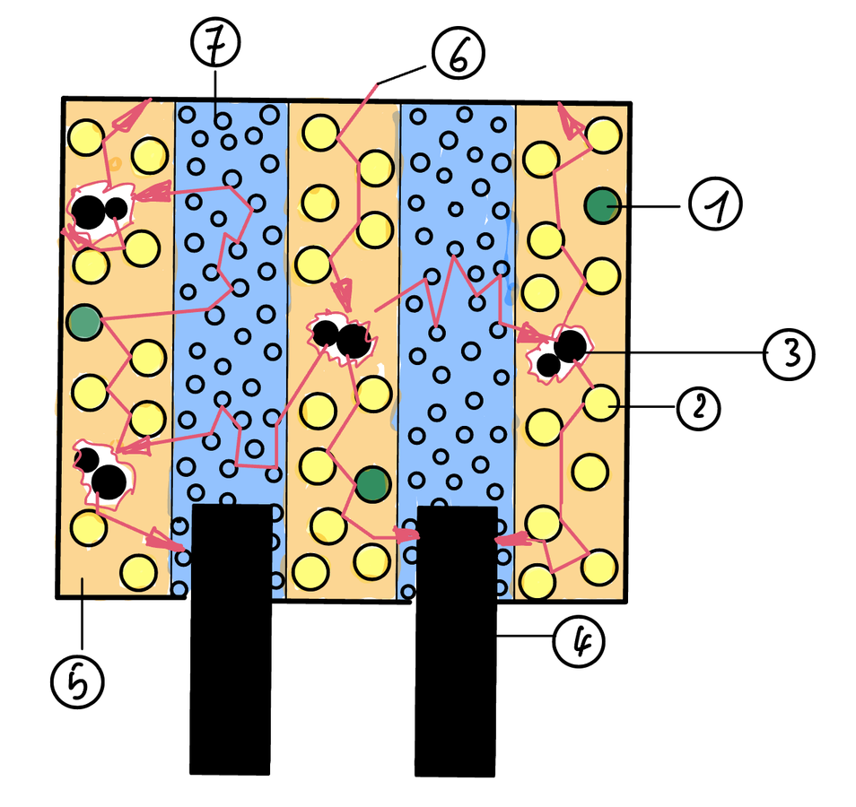
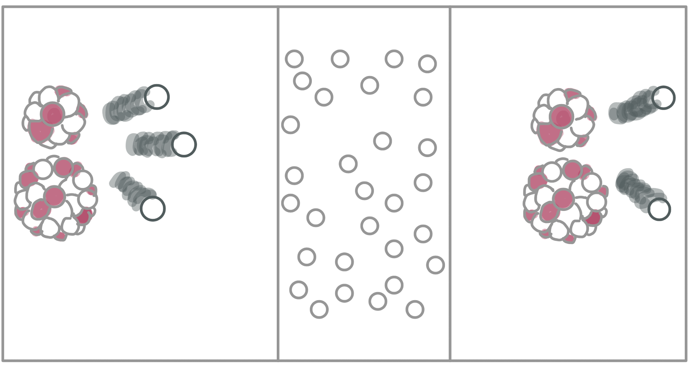

Bei vollständiger Verbrennung oder Spaltung liefert 1 kg Steinkohle etwa kWh Wärme, 1 kg Erdöl etwa kWh und 1 kg Uran-235 rund kWh. Für dieselbe Wärme wie 1 kg Uran-235 braucht man also etwa Tonnen Kohle. Uran hat eine viel größere als alle anderen Brennstoffe.
1938 beschossen und Fritz Straßmann in Berlin Uran (92 Protonen) mit langsamen . Sie wollten Elemente erzeugen, die sind als Uran. Stattdessen fanden sie das viel leichtere . Die Erklärung lieferte Lise Meitner, die kurz zuvor aus Deutschland fliehen musste: Der Urankern war worden. Gespalten wurde nur das Isotop .
Zeichne in die Felder 1, 3 und 4 die Neutronen mit Pfeilen ein.

Schreibe die Gleichung zu deiner Zeichnung auf. Beispiel: Es entstehen Barium-141 und Krypton-92.
Bei jeder Kernspaltung werden Neutronen frei. Sie sind sehr schnell, etwa 20 000 km/s. Uran-235 wird aber vor allem von Neutronen gespalten. Trifft ein Neutron einen weiteren Kern, entstehen wieder Neutronen. Bei jeder Spaltung wird eine große Menge frei.

UranerzUran-235 hat Neutronen (Massenzahl 235 − Protonen). Uran-238 hat Neutronen (Massenzahl 238 − Protonen). Beide sind also des Urans. Natürliches Uran besteht zu über 99 % aus , nur 0,7 % sind Uran-235. Der Unterschied: Uran-235 wird schon von Neutronen gespalten, Uran-238 praktisch nicht.
Neutronen haben Ladung. Deshalb werden sie vom positiv geladenen Atomkern nicht und von elektrischen Feldern nicht . Sie treffen den Kern wie kleine Torpedos.
STUNDE 2 · DIE KETTENREAKTIONWelcher Schritt passt zu einem Kraftwerk, welcher zu einer Bombe? Begründe.
Zeichne rechts neben das Kraftwerk, wie die Kettenreaktion abläuft. Erkläre in einem Satz.

Zeichne rechts, wie die Kettenreaktion abläuft, wenn jede Spaltung zwei neue Spaltungen auslöst.

Eine Kettenreaktion läuft nur, wenn genug spaltbares Material zusammen ist. Die kleinste Menge dafür heißt . Für eine Kugel aus reinem Uran-235 sind das etwa 50 kg, also eine Kugel mit etwa 17 cm Durchmesser. Weil Natururan nur 0,7 % Uran-235 enthält, wird es in Anreicherungsanlagen . Für ein Kraftwerk reichen 3 bis 5 % Uran-235, für eine Bombe braucht man etwa 90 %. Deshalb kann ein Kernkraftwerk wie eine Atombombe explodieren.
Im Reaktor steckt kein reines Uran-235, sondern . Es sitzt in fingerdicken Metallröhren, den . Die Brennstäbe stehen im . Zwischen die Brennstäbe lassen sich Steuerstäbe aus oder Cadmium schieben. Sie fangen Neutronen ein und so die Kettenreaktion. Ganz hineingefahren stoppen sie die Kettenreaktion.
Beschrifte die Teile 1 bis 7.

Die Bilder zeigen: schnelle Neutronen aus einer Spaltung, das Wasser, langsame Neutronen am nächsten Kern. Nenne drei Aufgaben des Wassers.

Ergänze die Energieumwandlungen. Ab der Wärme arbeitet ein Kohlekraftwerk genauso.
Kernenergie → → →
In der Sonne verschmelzen leichte Kerne. Ergänze die Gleichung der Fusion von Deuterium und Tritium.
21H + 31H → + + Energie
Bei vollständiger Verbrennung oder Spaltung liefert 1 kg Steinkohle etwa 8 kWh Wärme, 1 kg Erdöl etwa 12 kWh und 1 kg Uran-235 rund 23 Millionen kWh. Für dieselbe Wärme wie 1 kg Uran-235 braucht man also etwa 3000 Tonnen Kohle. Uran hat eine viel größere Energiedichte als alle anderen Brennstoffe.
1938 beschossen Otto Hahn und Fritz Straßmann in Berlin Uran (92 Protonen) mit langsamen Neutronen. Sie wollten Elemente erzeugen, die schwerer sind als Uran. Stattdessen fanden sie das viel leichtere Barium. Die Erklärung lieferte Lise Meitner, die kurz zuvor aus Deutschland fliehen musste: Der Urankern war gespalten worden. Gespalten wurde nur das Isotop Uran-235.
Zeichne in die Felder 1, 3 und 4 die Neutronen mit Pfeilen ein.
Schreibe die Gleichung zu deiner Zeichnung auf. Beispiel: Es entstehen Barium-141 und Krypton-92.
10n + 23592U → 23692U → 14156Ba + 9236Kr + 3 10n + Energie
Bei jeder Kernspaltung werden 2 oder 3 Neutronen frei. Sie sind sehr schnell, etwa 20 000 km/s. Uran-235 wird aber vor allem von langsamen Neutronen gespalten. Trifft ein Neutron einen weiteren Kern, entstehen wieder 2 oder 3 Neutronen. Bei jeder Spaltung wird eine große Menge Energie frei.
Uran-235 hat 143 Neutronen (Massenzahl 235 − 92 Protonen). Uran-238 hat 146 Neutronen (Massenzahl 238 − 92 Protonen). Beide sind also Isotope des Urans. Natürliches Uran besteht zu über 99 % aus Uran-238, nur 0,7 % sind Uran-235. Der Unterschied: Uran-235 wird schon von langsamen Neutronen gespalten, Uran-238 praktisch nicht.
Neutronen haben keine Ladung. Deshalb werden sie vom positiv geladenen Atomkern nicht abgestoßen und von elektrischen Feldern nicht abgelenkt. Sie treffen den Kern wie kleine Torpedos.
STUNDE 2 · DIE KETTENREAKTIONWelcher Schritt passt zu einem Kraftwerk, welcher zu einer Bombe? Begründe.
Schritt 3 passt zum Kraftwerk: Es fallen immer gleich viele Steine, die Reaktion läuft gleichmäßig. Schritt 2 passt zur Bombe: Die Zahl der fallenden Steine verdoppelt sich immer wieder, alles passiert in kürzester Zeit.
Zeichne rechts neben das Kraftwerk, wie die Kettenreaktion abläuft. Erkläre in einem Satz.
Von den freien Neutronen löst im Mittel genau eines die nächste Spaltung aus, die Leistung bleibt gleich.
Zeichne rechts, wie die Kettenreaktion abläuft, wenn jede Spaltung zwei neue Spaltungen auslöst.
Die Zahl der Spaltungen verdoppelt sich in jedem Schritt. In Bruchteilen einer Sekunde wird riesig viel Energie frei.
Eine Kettenreaktion läuft nur, wenn genug spaltbares Material zusammen ist. Die kleinste Menge dafür heißt kritische Masse. Für eine Kugel aus reinem Uran-235 sind das etwa 50 kg, also eine Kugel mit etwa 17 cm Durchmesser. Weil Natururan nur 0,7 % Uran-235 enthält, wird es in Anreicherungsanlagen angereichert. Für ein Kraftwerk reichen 3 bis 5 % Uran-235, für eine Bombe braucht man etwa 90 %. Deshalb kann ein Kernkraftwerk nicht wie eine Atombombe explodieren.
Im Reaktor steckt kein reines Uran-235, sondern angereichertes Uran. Es sitzt in fingerdicken Metallröhren, den Brennstäben. Die Brennstäbe stehen im Wasser. Zwischen die Brennstäbe lassen sich Steuerstäbe aus Bor oder Cadmium schieben. Sie fangen Neutronen ein und regeln so die Kettenreaktion. Ganz hineingefahren stoppen sie die Kettenreaktion.
Beschrifte die Teile 1 bis 7.
Uran-235 (spaltbar)
Uran-238
Spaltprodukte
Steuerstab (Regelstab)
Brennstab
Weg eines Neutrons
Wasser (Moderator)
Die Bilder zeigen: schnelle Neutronen aus einer Spaltung, das Wasser, langsame Neutronen am nächsten Kern. Nenne drei Aufgaben des Wassers.
Moderator: bremst die schnellen Neutronen ab, damit sie Uran-235 spalten können
Kühlmittel: transportiert die Wärme aus dem Reaktor zum Dampferzeuger
Abschirmung: hält einen Teil der Strahlung zurück
Ergänze die Energieumwandlungen. Ab der Wärme arbeitet ein Kohlekraftwerk genauso.
Kernenergie → Wärme (innere Energie) → Bewegungsenergie (Turbine) → elektrische Energie
In der Sonne verschmelzen leichte Kerne. Ergänze die Gleichung der Fusion von Deuterium und Tritium.
21H + 31H → 42He + 10n + Energie